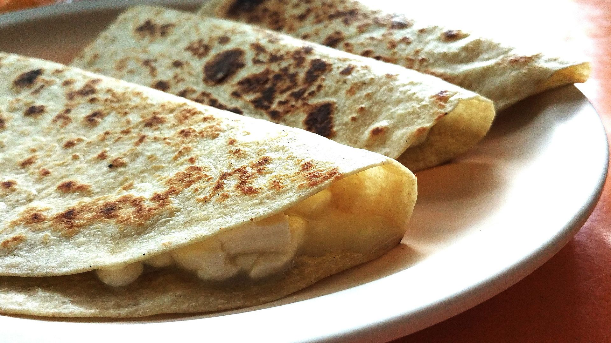

Inicio
Quesadillas

Descripción
Exquisitas quesadillas fritas. Perfectas para cuaquier momento del día. Matan el hambre siendo el alimento perfecto para cuando se quiere algo rápido y sumamente sencillo.
Ingredientes
- 3 tortillas de trigo o de maíz
- 3 rebanadas de queso Monterey Yack
- aceite
Instrucciones
- Calentar la sartén a fuego medio y agregar aceite.
- Poner a freir durante 20 segundos la tortilla.
- Agregar el queso y doblar la tortilla.
- Freir por ambos lados hasta que la tortilla logre una consistencia crujiente.
- Disfrutar con salsita verde.